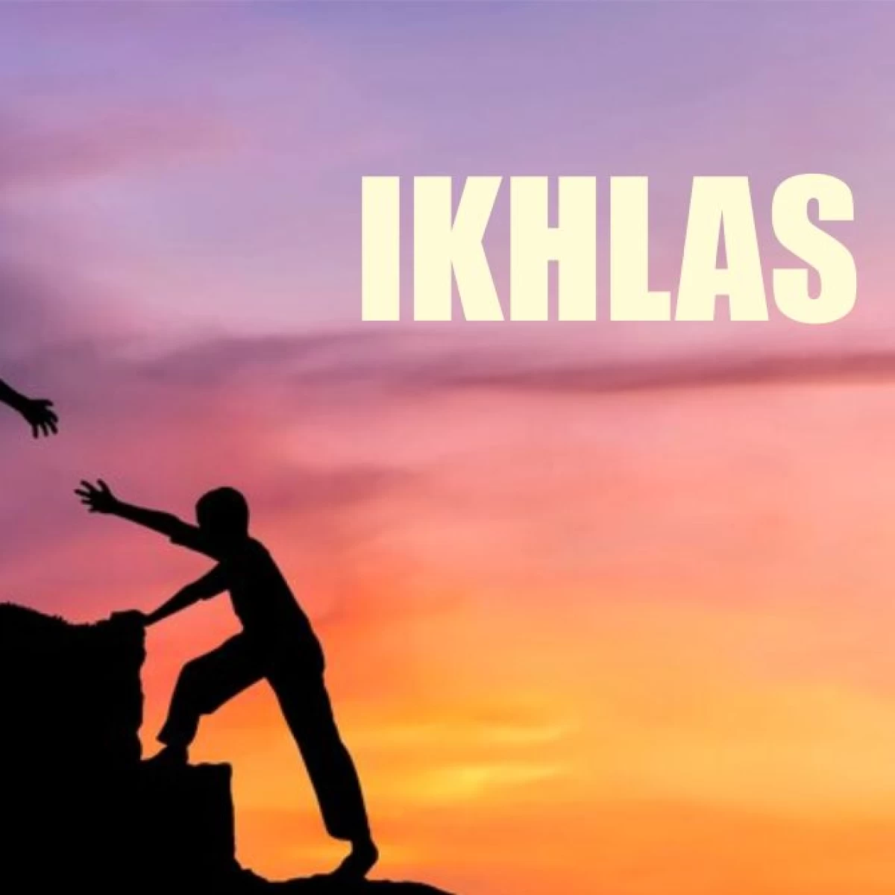
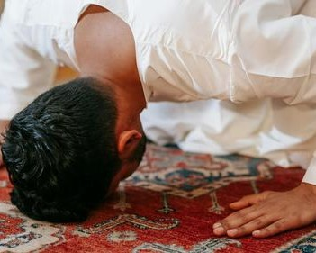

Ikhlas: Pondasi Amal dalam Islam
Ikhlas berasal dari kata خَلَصَ yang berarti “murni, bersih dari campuran.”.Ikhlas adalah memurnikan niat dalam beramal hanya untuk Allah ﷻ, tanpa mengharap pujian manusia atau keuntungan duniawi. Ikhlas merupakan sebuah ungkapan perkataan yang sangat sering terdengar dalam kehidupan. Namun makna yang terkandung di dalamnya belum melekat secara kuat dan menjadi perhatian khusus. Sikap Ikhlas merupakan implementasi dari sebuah rangkaian tindakan tulus yang tercipta dari lubuk hati. Dan menumbuhkan rasa ketenangan, kedamaian diri sendiri dan memiliki dampak positif bagi orang lain yang berada dalam lingkungan yang sama. Keikhlasan secara sederhana, melakukan sesuatu tanpa mengharapkan imbalan atau pengakuan dan merupakan perbuatan yang lahir dari hati dan niat baik.
Definisi Ikhlas
Secara umum, ikhlas berarti memurnikan niat dan tujuan hanya untuk Allah ﷻ dalam setiap amal. Dalam Islam, ikhlas menjadi syarat utama diterimanya amal ibadah. Orang yang ikhlas tidak mengharapkan pujian, balasan, atau pengakuan dari manusia, melainkan hanya ridha Allah. Ikhlas juga berarti menjauhkan diri dari riya (pamer) dan ujub (bangga diri), serta menjaga hati agar tetap bersih dari niat selain karena Allah.

Hadist & Dalil tentang Ikhlas
Allah ﷻ berfirman:
وَمَا أُمِرُوا إِلَّا لِيَعْبُدُوا اللَّهَ مُخْلِصِينَ لَهُ الدِّينَ حُنَفَاءَ وَيُقِيمُوا الصَّلَاةَ وَيُؤْتُوا الزَّكَاةَ وَذَلِكَ دِينُ الْقَيِّمَةِ
Artinya: "Padahal mereka tidak diperintah kecuali supaya menyembah Allah dengan memurnikan ketaatan kepada-Nya dalam (menjalankan) agama, dengan lurus, dan supaya mereka mendirikan shalat serta menunaikan zakat. Dan yang demikian itulah agama yang lurus."(QS. Al-Bayyinah: 5) Ayat ini menegaskan bahwa inti dari seluruh ibadah adalah keikhlasan. Shalat, zakat, dan ibadah lainnya tidak akan bernilai jika dilakukan untuk selain Allah. Ikhlas adalah syarat utama agar amal diterima. Rasulullah ﷺ bersabda:إِنَّمَا الأَعْمَالُ بِالنِّيَّاتِ، وَإِنَّمَا لِكُلِّ امْرِئٍ مَا نَوَى
Artinya: "Sesungguhnya amal itu tergantung niatnya, dan setiap orang akan mendapatkan sesuai dengan apa yang ia niatkan." (HR. Bukhari & Muslim)Hadits ini menunjukkan bahwa niat adalah ruh dari amal. Ikhlas menjadikan amal bernilai di sisi Allah. Tanpa niat yang benar, amal bisa kehilangan makna meskipun tampak besar di mata manusia.
Bentuk Ikhlas
Ikhlas dapat diwujudkan dalam tiga dimensi utama:
- Ikhlas secara batin (الإخلاص في الباطن / al-ikhlāṣ fī al-bāṭin): Membersihkan hati dari riya (pamer), ujub (bangga diri), dan hanya berharap ridha Allah.
- Ikhlas dalam perbuatan (الإخلاص في العمل / al-ikhlāṣ fī al-‘amal): Menjalankan amal ibadah dan aktivitas sehari-hari dengan niat ibadah, bukan sekadar rutinitas atau mencari keuntungan dunia.
- Ikhlas dalam perkataan (الإخلاص في القول / al-ikhlāṣ fī al-qawl): Berbicara dengan jujur, tidak mencari pujian, dan menyampaikan kebenaran semata-mata karena Allah.
Contoh penerapan Ikhlas
Ikhlas dapat diterapkan diberbagai bidang seperti:
- Belajar: Menuntut ilmu agar semakin dekat dengan Allah, bukan sekadar mencari gelar.
- Sedekah: Memberi tanpa berharap balasan atau pengakuan.
- Kerja: Melaksanakan tugas dengan niat ibadah.
- Ibadah: Shalat, puasa, dan amal lainnya dilakukan semata-mata untuk ridha Allah.

Hikmah Ikhlas
- Amal diterima Allah: Tanpa ikhlas, amal sebesar apa pun tidak bernilai
- Hati menjadi tenang: Ikhlas membebaskan dari beban mencari pujian manusia
- Menguatkan kesabaran: Ikhlas membuat seseorang tabah menghadapi ujian karena semua dilakukan untuk Allah.
- Meningkatkan kualitas amal: Amal kecil yang ikhlas bisa lebih besar nilainya daripada amal besar tanpa ikhlas.
- Menjadi sumber kebahagiaan sejati: Ikhlas menjadikan hidup lebih bermakna dan penuh keberkahan.
Kesimpulan
Ikhlas adalah pondasi amal dalam Islam yang memurnikan niat seorang hamba hanya kepada Allah ﷻ. Tanpa ikhlas, amal yang besar sekalipun tidak akan bernilai, sementara amal kecil yang dilakukan dengan hati tulus bisa menjadi sangat agung di sisi-Nya. Ikhlas membebaskan hati dari riya dan ujub, serta menjadikan ibadah lebih bermakna dan penuh keberkahan.Lebih dari itu, ikhlas membawa ketenangan batin dan kebahagiaan sejati. Seorang muslim yang berusaha menjaga ikhlas akan lebih sabar menghadapi ujian, lebih ringan dalam beramal, dan lebih fokus pada ridha Allah daripada pengakuan manusia. Dengan ikhlas, hidup menjadi lebih bermakna, penuh keberkahan, dan menjadi jalan menuju ridha Allah ﷻ.